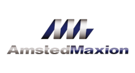
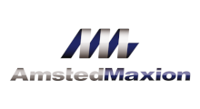

Projetos
Abaixo destacamos os principais projetos executados pela Quality Research, relacionando seus serviços:
Ajinomoto
Avaliações para Seguros de Máquinas e Equipamentos e Edificações das unidades Limeira, Pederneiras, Valparaiso, Laranjal Paulista e São Paulo.
Amsted Maxion
Reengenharia de Patrimônio, Avaliações para Valor de Mercado para Máquinas e Equipamentos, Móveis e Utensílios, Equipamentos de Informática, Edifícios e Terrenos.
Albras Alumínio Brasileiro S.A. - Grupo Norsk Hydro Brasil
Reengenharia de Patrimônio com Inventário Físico, Confronto Físico X Contábil, formatação do Banco de Dados de importação para o Sistema Patrimonial e Laudos para fins de Seguro.
Alumina do Norte do Brasil S.A. - Grupo Norsk Hydro Brasil
Reengenharia de Patrimônio com Inventário Físico, Confronto Físico X Contábil, formatação do Banco de Dados de importação para o Sistema Patrimonial e Laudos para fins de Seguro.
Atofina Brasil Química Ltda.
Inventário Físico de Máquinas e Equipamentos de uma linha de produção química na unidade de Jundiaí.
BASF S.A.
Avaliações para Seguros de Máquinas e Equipamentos e Edificações das unidades Camaçari, Demarchi, Guaratinguetá, Jaboatão, Mauá, Paulínea, Vila Prudente e todas as unidades da América Latina - (favor me informar os locais).
CAMAP Cooperativa Agrícola Mista da Alta Paulista
Trabalho para atender a Lei 11.638 com Inventário Físico e Estudo de Vida Útil para Máquinas e Equipamentos e Edificações.
Capuani do Brasil Ltda.
Reengenharia de patrimônio com Inventário Físico, Confronto Físico X Contábil, formatação do Banco de Dados para Importação para o Sistema Patrimonial Microsiga e Avaliação para Seguros.
Cartonale Ind. e Benef. de Materiais Plásticos Ltda.
Reengenharia de Patrimônio com Inventário Físico, Emplaquetamento, Confronto Físico x Contábil, Avaliação para Valor de Mercado, formatação do Banco de Dados de Importação para o Sistema Patrimonial.
Cooperativa CASUL
Avaliações para Valor de Mercado e Estudo de Vida Útil para Máquinas e Equipamentos, Edificações e Terrenos.
Condomínio Canoas Shopping Center
Reengenharia de Patrimônio com Inventário Físico, Emplaquetamento, Confronto Físico x Contábil, formatação do Banco de Dados de Importação para o Sistema Patrimonial e Relatórios Contábeis.
Continental do Brasil Produtos Automotivos Ltda.
Reengenharia de Patrimônio com Inventário Físico, Emplaquetamento, Confronto Físico x Contábil, formatação do Banco de Dados de Importação para o Sistema Patrimonial para as unidades Jundiaí, Salto, Guarulhos, São Bernardo dos Campos, Gravataí e Resende.
Dart do Brasil Ind. e Com. Ltda. - Tupperware Brasil
Reengenharia de Patrimônio com Inventário Físico, Emplaquetamento, Confronto Físico x Contábil de Máquinas e Equipamentos, Móveis e Utensílios e Equipamentos de Informática.
Doremus Alimentos Ltda.
Reengenharia de Patrimônio com Inventário Físico, Emplaquetamento, Confronto Físico x Contábil e Estudo de Vida Útil para atender à Lei 11.638 de Máquinas e Equipamentos, Móveis e Utensílios, Equipamentos de Informática e Edificações.
Elekeiroz S.A. - Grupo OCQ
Avaliação de Máquinas e Equipamentos, Móveis e Utensílios e Edificações para Seguro, Relatório de Análise de Riscos das unidades Várzea Paulista - SP, Camaçari - BA, Guarulhos - SP, Piracicaba - SP, Jaguariúna - SP e Monte Mor - SP. Reengenharia de Patrimônio com Inventário Físico, Emplaquetamento, Confronto Físico x Contábil e Relatório Contábil.
Enersystem do Brasil Ltda.
Reengenharia de Patrimônio com Inventário Físico, Emplaquetamento, Confronto Físico x Contábil e Laudos para Reavaliação Contábil.
Engimplan Eng. de Implantes Ortopédicos Ltda. (Materialise)
Reengenharia de Patrimônio com Inventário Físico, Emplaquetamento, Confronto Físico x Contábil, Formatação do Banco de Dados de Importação para o Sistema Patrimonial, Avaliação para Valor de Mercado e Estudo de Vida Útil para atender à Lei 11.638.
Fortymil Indústria de Plásticos Ltda.
Avaliação para Valor de Mercado de Máquinas e Equipamentos, Edificações e Terrenos.
Fundação Padre Anchieta (TV Cultura)
Reengenharia de patrimônio com Inventário Físico com Termo de Responsabilidade, Confronto Físico X Contábil, Formatação do Banco de Dados de Importação para o Sistema Patrimonial.
Gascom Equipamentos Industriais Ltda.
Inventário Físico com Emplaquetamento de Máquinas e Equipamentos, Móveis e Utensílios, Equipamentos de Informática e Edificações, Confronto Físico x Contábil, Reengenharia de Patrimônio e implantação de Sistema Patrimonial da Quality Research.
Iochpe Maxion S.A.
Avaliação para Valor de Mercado de Edificações e Terrenos das unidades de Guarulhos, Santo André e Limeira.
Instronic Instrumentos de Testes Ltda.
Inventário Físico com Emplaquetamento e Avaliação para Valor de Mercado de Máquinas e Equipamentos, Móveis e Utensílios, Equipamentos de Informática.
Itautec S.A.
Avaliação para Valor de Mercado de Máquinas e Equipamentos, Móveis e Utensílios, Equipamentos de Informáticae Edificações da Unidade de Jundiaí.
Leroy Merlin
Inventário Físico, Emplaquetamento de Máquinas e Equipamentos, Móveis e Utensílios, Equipamentos de Informática, Confronto Físico x Contábil, Reengenharia de Patrimônio e Exportação dos Dados para o Sistema Patrimonial.
Libbs Farmacêutica Ltda.
Avaliação de Seguros, Valor de Mercado e Estudo de Vida Útil para Máquinas e Equipamentos, Móveis e Utensílios, Equipamentos de Informática e Edificações para atender à Lei 11.638.
Milenia Agrociências S.A. (Grupo Adama)
Avaliação para Valor de Mercado e Avaliação da Marca.
Netafim Sistemas e Equipamentos de Irrigação Ltda.
Avaliação para fins de Seguros, Reengenharia de Patrimônio com Inventário Físico, Emplaquetamento, Confronto Físico x Contábil e Estudo de Vida Útil para atender à Lei 11.638 para Máquinas e Equipamentos, Móveis e Utensílios, Equipamentos para Informática e Edificações das Unidades de Campinas e Ribeirão Preto.
Nife Sistemas Elétricos Ltda.
Inventário Físico e Avaliação para Valor de Mercado de Máquinas e Equipamentos.
Nisshinbo do Brasil Ind. Têxtil Ltda.
Reengenharia de Patrimônio com Inventário Físico, Emplaquetamento dos Bens, Confronto Físico x Contábil, Formatação do Banco de Dados de Importação para o Sistema Patrimonial e Estudo de Vida Útil de Máquinas e Equipamentos, Móveis e Utensílios, Equipamentos de Informática, Edificações e Terrenos.
Organização Industrial Centenário Ltda.
Reengenharia de Patrimônio com Inventário Físico, Emplaquetamento, Confronto Físico x Contábil, Formatação do Banco de Dados de iimportação para o Sistema Patrimonial (RM).
Petrocoque S.A.
Avaliação para Seguros, Valor de Mercado e Estudo de Vida Útil para Máquinas e Equipamentos, Móveis e Utensílios, Equipamentos de Informática e Edificações.
PQU - Petroquímica União S.A. (Braskem)
Reengenharia de Patrimônio com Inventário Físico, Confronto Físico x Contábil, Formatação do Banco de Dados de Importação para o Sistema Patrimonial e Avaliação para Seguro e Avaliação para Valor de Mercado.
Pride Fabricação de Embalagens Ltda. (Caixaplast)
Avaliação para Valor de Mercado para Máquinas e Equipamentos, Móveis e Utensílios, Equipamentos de Informática e Avaliação Econômica Financeira.
Promax Produtos Máximos S.A. - Ind. e Com. (Bardahl)
Reengenharia de Patrimônio com Inventário Físico, Emplaquetamento, Confronto Físico x Contábil de Máquinas e Equipamentos, Móveis e Utensílios e Equipamentos de Informática.
Refrix Envasadora de Bebidas Ltda. (Xereta)
Reengenharia de Patrimônio com Inventário Físico, Emplaquetamento, Confronto Físico x Contábil, Estudo de Vida Útil e Formatação de Banco de Dados de Importação para o Sistema Patrimonial de Máquinas e Equipamentos, Móveis e Utensílios, Equipamentos de Informática e Edificações.
Remaza (Grupo)
Avaliação de Imóveis para Valor de Mercado a ser utilizado para Reavaliações Contábeis.
Robert Bosch Ltda.
Reengenharia de patrimônio com Inventário Físico, Emplaquetamento, Confronto Físico X Contábil e Relatório Contábil.
Royalplas Indústria e Comércio Ltda.
Reengenharia de patrimônio com Inventário Físico, Confronto Físico X Contábil, Formatação do Banco de Dados de Importação para o Sistema Patrimonial (Microsiga) e Avaliação para fins de Seguros.
Sabó Indústria e Comércio de Aautopeças Ltda.
Inventário Físico, Reavaliação Contábil, Avaliação para Valor de Mercado e Liquidação e Estudo de Vida Útil para atender a Lei 11.638 de Máquinas e Equipamentos e Edificações (CPC27).
Sebrae Serviço de Apoio às Micro e Pequenas Empresas
Inventário Físico, Avaliações para Valor de mercado de Máquinas e Equipamentos, Móveis e Utensílios, Equipamentos de Informática, Edificações e Terrenos.
Sofape S.A. (Tecfil)
Avaliação de Imóveis para Valor de Mercado.
Takata Petri S.A.
Reengenharia de Patrimônio com Inventário Físico, Emplaquetamento, Confronto Físico x Contábil de Máquinas e Equipamentos, Móveis e Utensílios e Equipamentos de Informática.
Tecumseh do Brasil Ltda.
Reengenharia de Patrimônio com Inventário Físico, Emplaquetamento, Confronto Físico x Contábil, Formatação do Banco de Dados de Importação para o Sistema Patrimonial (Sispro e Oracle) e Avaliação Patrimonial de Máquinas e Equipamentos, Móveis e Utensílios e Equipamentos de Informática e Edificações.
Termomacaé Ltda. (Petrobras)
Avaliação para Valor de Mercado de Máquinas e Equipamentos.
Ticket Serviços S.A. (Grupo Accor)
Reengenharia de Patrimônio com Inventário Físico, Emplaquetamento, Confronto Físico x Contábil, Formatação de Banco de Dados de Importação para o Sistema Patrimonial (Sispro e Oracle) de Máquinas e Equipamentos, Móveis e Utensílios, Equipamentos de Informática.
Tortuga Cia. Zootécnica Agrária
Reengenharia de Patrimônio com estudos nas contas contábeis de Máquinas e Equipamentos, Móveis e Utensílios e Equipamentos de Informática.
Toyobo do Brasil Indústria Têxtil Ltda.
Avaliação de Terrenos e Edificações para Valor Locativo e de Mercado em quarenta locais. Inventário Físico e Estudo de Vida Útil para atender à Lei 11.638 e Avaliações Patrimoniais para Edificações.
Transcor Indústria de Pigmentos e Corantes Ltda.
Avaliação para Seguros de Máquinas e Equipamentos da unidade de Santa Cruz - Rio de Janeiro - RJ.
Trelleborg Group
Inventário Físico com Emplaquetamento de Máquinas e Equipamentos, Móveis e Utensílios, Equipamentos de Informática, Confronto Físico x Contábil, Reengenharia de Patrimônio e Exportação dos Dados para o Sistema Patrimonial.
UHE Igarapava - Consórcio da Usina Hidrelétrica de Igarapava
Avaliação para fins de Seguros de Máquinas e Equipamentos, Móveis e Utensílios, Equipamentos de Informática e Edificações.
VALE
Avaliação para fins de Seguros e Análise de Riscos de Máquinas e Equipamentos e Edificações das unidades Brucutú, Carajás-PA, Alegria e Timbopeba, Mina de Fábrica e Usina de Pelotização, Mina do Sossego (Cobre), Mina do Azul (Manganês), Armazém de Cobre e Usina de Pelotização de São Luiz. Minas de Jangada, Mutuca, Tamanduá, Capitão do Mato, Abóboras, Mar Azul, Pico de Itabirito, Capão Xavier, Planta de Beneficiamento de Vargem Grande, Terminais de Embarque Olhos D'Água, Andaime e Guaíba.
Veracel Celulose S.A.
Avaliação Patrimonial para fins de Obsolescência.
Vida Forte Nutrientes Ind. e Cem. de Produtos Naturais Ltda. (Vitafor)
Inventário Físico com Emplaquetamento de Máquinas e Equipamentos, Móveis e Utensílios, Equipamentos de Informática, Confronto Físico x Contábil, Reengenharia de Patrimônio e Exportação dos Dados para o Sistema Patrimonial.
Yamaha Motor do Brasil Ltda.
Avaliação para fins de Seguros de Máquinas e Equipamentos, Móveis e Utensílios, Equipamentos de Informática e Edificações das unidades Manaus-AM, São Paulo-SP, Jandira-SP e Diadema-SP. Também elaboramos Avaliação para Valor de Mercado de Manaus-AM.